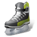

Englanti
Kanada
Yhdysvallat
Seuraava luettelo sis‰lt‰‰ osan maailman suosituimmista urheilulajeista.
| Kuva | Nimi | Kentt‰pelaajat | Maalivahti | Alkuper‰ | Kuvaus |
|---|---|---|---|---|---|
|
Jalkapallo | 10 | Kyll‰ | Englanti |
Jalkapallo on urheilulaji, jossa kaksi yksitoistahenkist‰ joukkuetta pelaavat pallolla. |
|  | J‰‰kiekko | 5 | Kyll‰ | Kanada |
J‰‰kiekko on j‰‰ll‰ pelattava joukkuelaji, jossa luistelijat k‰ytt‰v‰t mailaa saadakseen kiekon vastajoukkueen maaliin. |
| Koripallo | 5 | Ei | Yhdysvallat |
Koripallo on joukkuelaji, jossa kaksi viisihenkist‰ joukkuetta yritt‰‰ tehd‰ pisteit‰ heitt‰m‰ll‰ pallon korin l‰pi samalla noudattaen s‰‰ntˆj‰. |